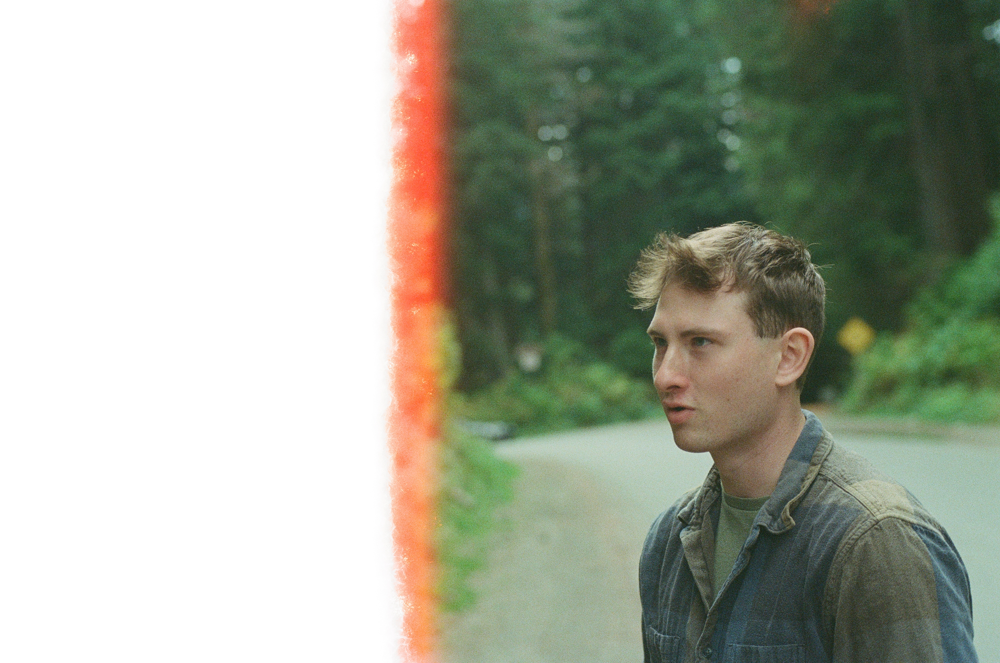

Late 2023 Hiking Shoot
Finally got around to developing some hiking pictures from last year. This one includes some hiking pictures from Fall, some Pike Place Market pictures from Christmas, and some pictures I don't know when I took them. I also seem to have forgotten what film I used, but I know it was some very expired Kodak film, probably Kodak Gold 200/400.
Interestingly enough the light gremlins from some of my previous pictures have seemingly disappeared. Only on the darkest pictures do you get a hint of blue. Perhaps the higher ISO is causing the shutter speed to be higher, somehow fixing the issue. Maybe.
1

I'm always curious to see how my test images turn out (if at all). This one was quite funny.
2

3

Leaves are so photogenic.
4

5

6

I really like the framing in this one. I'm not in this one, but I actually think 3 people is more geometrically pleasing than 4 would've been.
7

8

9

10

11

Not a very good picture, but this was a really cool river/cliff we climbed up.
12

13

We stopped here for lunch at the top of the mountain in this little cave thing. I thought this would be more of a sillhouette, but I still like it.
14

I love the monotone gradient on this one. The rain and fog made this picture pop, though it was not fun to walk down in.
15

16

This was a different (and nicer) day at a park near Mill Creek. The lighting turned out nice in this one.
17

18

19

I need to take more cloud pictures.
20

This was me rushing to take a picture of a rainbow. By the time I got my camera to take a picture it started fading, and this was all I managed to get.
21

22

23

Some staircase near "The Gum Wall" in Pike Place Market. One of my favorites in this roll.
24

25

Some nice sunsets. I need to figure out how to make the colors show through better. It would also be interesting to see how that alternate color film looks with a sunset.
26

Fin
That's all! It's been a while since I developed any film, and it feels good to get it back after waiting for so many months. I already have another roll I need to pickup, and another I'm about to finish shooting, so I'll have plenty to publish here shortly.